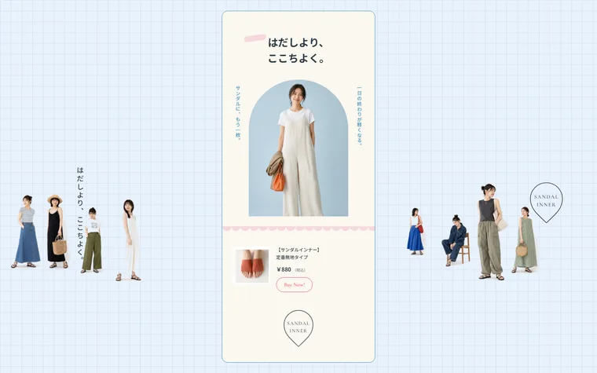
あしたの靴下「サンダルインナー」 方眼の水色地に幅370pxの細い縦カラムを1本だけ通し、その外側に切り抜き人物・縦書きコピー・円形バッジを反復させた単品LP。アーチ型のマスクと波形の区切りはCSSだけで作り、スクロールの出現は行き過ぎて戻るオーバーシュートのイージング。全6セクションをPC・SPの2本立てでFigmaに起こしてから静的HTML化。-
-
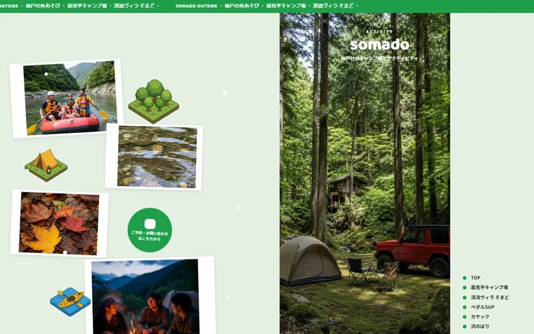
杣戸の外あそび 山あいのキャンプ場とアクティビティの案内サイト。ミント色の地に幅460pxの縦カラムを1本だけ通し、その中で濃緑→黄→薄緑のパネルを積み上げました。カラムの外側にはコラージュ写真と鳥瞰のイラストマップが散ります。動きの主役は行き過ぎて戻るイージングで写真と吹き出しが飛び出すポップな演出。全8セクションを PC とスマートフォンの2画面で設計してから実装しました。 -
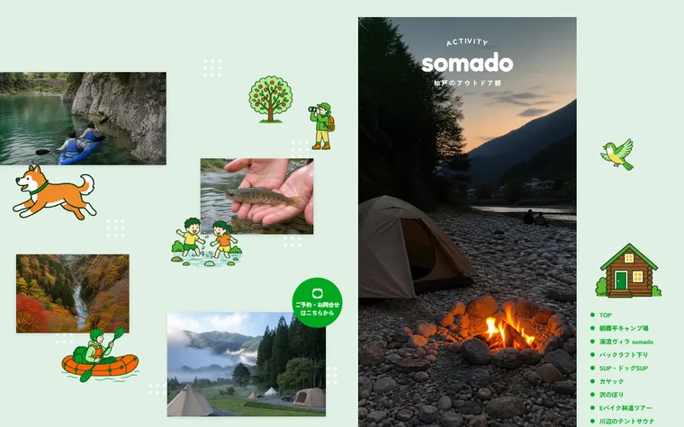
杣戸のアウトドア部 山あいのアウトドアガイドのトップページ。中央460pxのカラムだけが流れ、左の「野原」と右の縦ナビは動かないという骨格が特徴です（どちらもposition:fixed）。緑と黄と若草を交互に敷いた全12セクションで、アクティビティ8面はピル・アーチ英字・枠線ボタンが緑→橙と入れ替わります。写真マーキー、跳ねるキャッチ、フェードのカルーセルまで、外部ライブラリを使わず素の CSS と IntersectionObserver で実装しました。 -
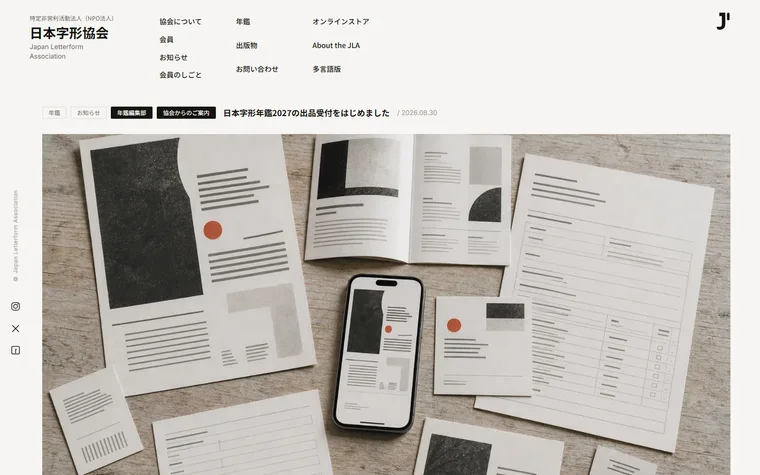
日本字形協会 文字と組版にたずさわる人が集まる団体のトップページ。ほぼ無彩色のエディトリアルな組みに、朱を1色だけ差しました。目玉は「会員の壁」——名前が大小まざって左右に見切れ、ホバーするとマウスが入ってきた辺から顔写真が伸びる方向感知の演出です。見出しは左から拭き取り、下線は左→右に引かれ、ヘッダーは下スクロールで消えます。全5セクションを PC とスマートフォンの2画面で設計。 -
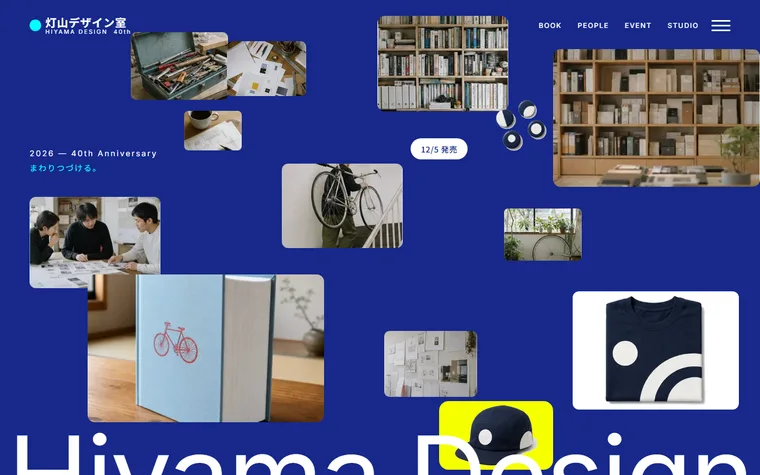
灯山デザイン室 40th デザイン事務所の40周年記念サイト。ネイビー地に原色4色だけを差す配色で、巨大なワードマーク・縦組みの引用・膨らんだ英字・散らしコラージュを組みました。マーキー帯、弾けて散る写真、スクロール進捗で部品から組み上がるロゴ、呼吸するフロアマップまで、動きはすべて CSS キーフレームで実装。全10セクションを PC とスマートフォンの2画面で設計。 -
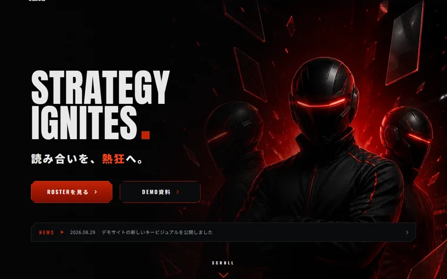
NOVA DECK UNION 競技カードゲームチームのサイト。黒地に発光する赤、角を斜めに落としたパネル、背景の巨大なゴースト英字で組んだ暗色のデザインです。カルーセル・タブ・ステータスバー・トーナメント表・FAQ の開閉まで、外部ライブラリを使わず素の JavaScript で実装しました。全10セクションを PC とスマートフォンの2画面で設計。 -
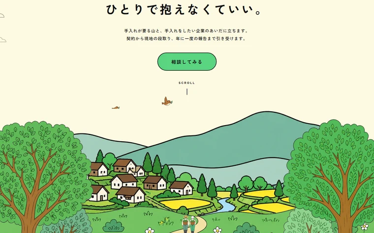
モリツグ 山林の持ち主と企業をつなぐ仲介サービスのサイト。太い黒の輪郭線とセクションごとの色替え（クリーム／黄／緑）、手描きの波線、鳥のマスコットで組んだ線画主体の1ページです。ヒーローは3層に分けてスクロール視差、雲が流れ、マスコットが4コマでコマ送りに羽ばたく——動きはすべて CSS で実装しました。全8セクションを PC とスマートフォンの2画面で設計。 -
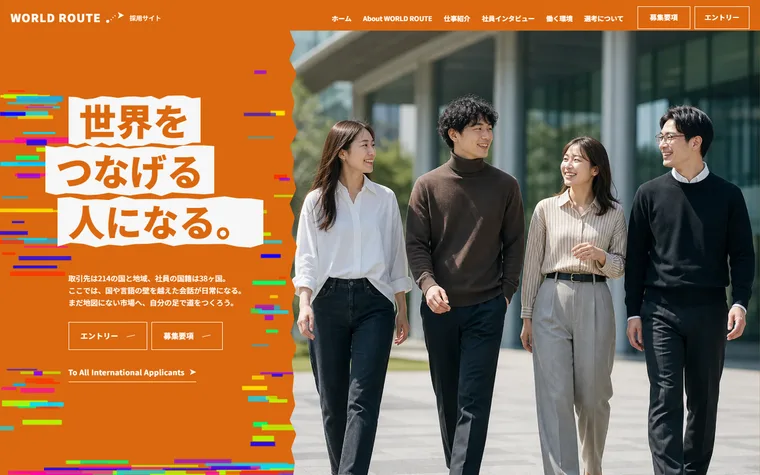
WORLD ROUTE 採用サイト 越境 EC を手がける企業の採用サイト。オレンジ一色＋グリッチ表現の1ページ構成です。Figma でデザインを起こしてから、素の HTML / CSS / JavaScript で実装しました。 -
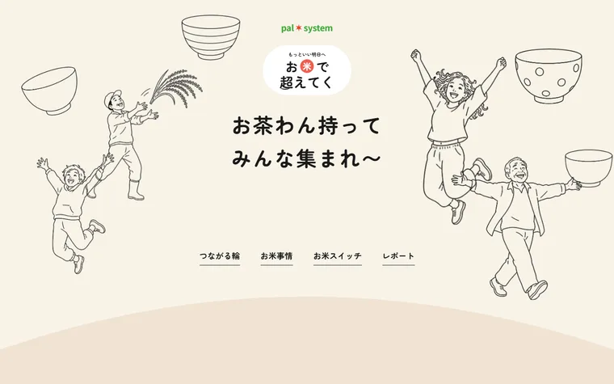
お米でつながる お米をテーマにしたキャンペーンの縦長1ページ。手描きの線画、有機的なブロブ、セクションごとの色替えが特徴です。全8セクションを Figma で設計してから静的 HTML に実装しました。 -
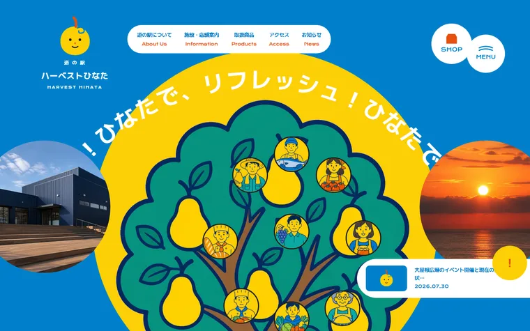
道の駅 ハーベストひなた 道の駅のトップページ。円周を回るキャッチ、梨の木に生産者が実るキービジュアル、波形のセクション区切りが特徴です。全8セクションを Figma で設計してから静的 HTML に実装しました。 -
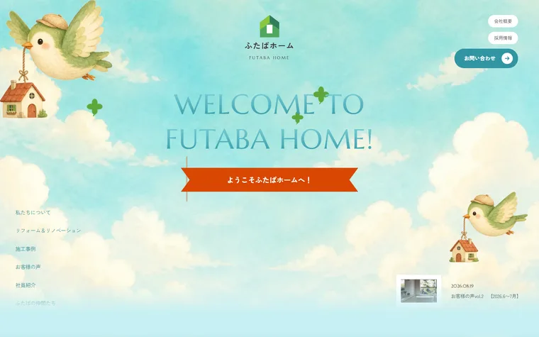
ふたばホーム リフォーム会社のコーポレートサイト。絵本のような一枚絵の世界観で、空から家の中へと降りていく縦長1ページに構成しました。全8セクションを Figma で設計してから静的 HTML に実装。 -
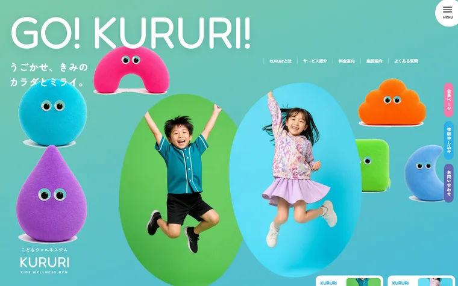
こどもウェルネスジム KURURI 未就学児向けウェルネスジムのサイト。ぬいぐるみのマスコット9体と原色のブロックで組んだ、全11セクションの縦長1ページです。波形の区切りと、ふわふわ動くマスコットが全体をつないでいます。 -
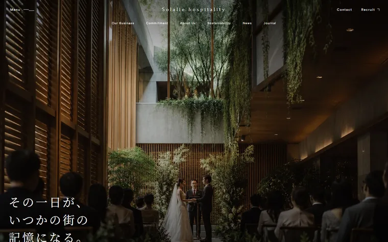
株式会社ソラリエ ホテル・レストラン・ウエディングをプロデュースするホスピタリティ企業のコーポレートサイト。深い青と写真だけで組み、Forum と明朝で静かなトーンにした全8セクションです。PC とスマートフォンの2画面で設計。 -
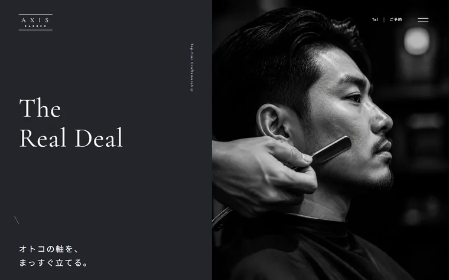
AXIS BARBER メンズバーバーの店舗サイト。写真も文字も全編モノクロで、色を一切使わずに組んだ全8セクションです。Cormorant Garamond の大きなセリフ体と、縦組みの英字ラベルでトーンをつくっています。 -
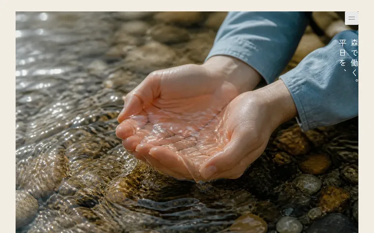
NOKI 2nd Home Weekday 別荘のサブスクリプションサービスのサイト。クリームの地に静かな自然写真だけを置き、彩度のある色は CTA のオレンジ1色に絞った全8セクションです。縦書きのキャッチと Marcellus の大きな英字が骨格になっています。 -
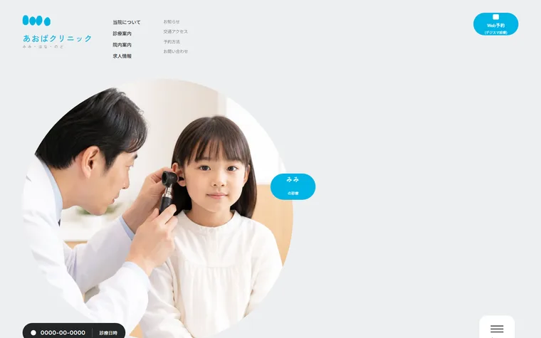
あおばクリニック 耳鼻咽喉科クリニックのトップページ。水色1色＋白の清潔なトーンで、写真もロゴも有機的なブロブ形に統一した全7セクションです。診療時間の表と、フッターの大きな青いカードが要になっています。 -
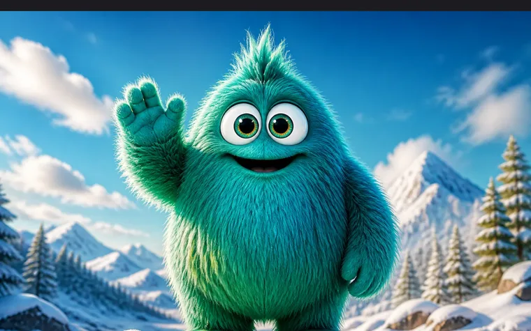
KUJIRA PICTURES 映像・体験デザインスタジオのサイト。セクションごとに地の色を黒・黄・緑・青と切り替える構成で、Archivo Black の英字と極太ゴシックの和文でポップに振り切った全8セクションです。 -
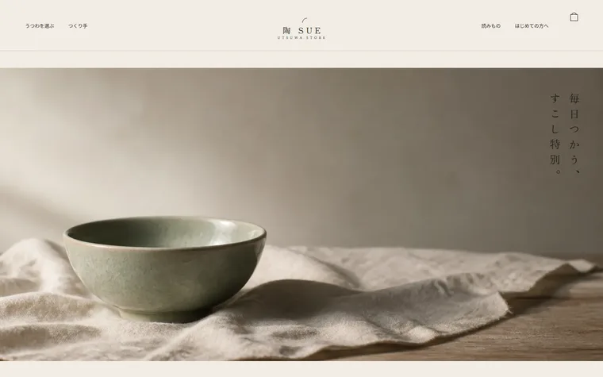
陶 SUE うつわのオンラインストア。生成りの紙色に墨と青磁、縦組みの明朝で組んだ全8セクションです。参照サイトを置かず、デザインモックの制作から起こしました。 -
制作実績は随時追加しています